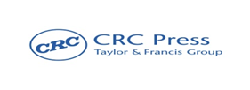

Journal Publication Partners
Authors are requested to prepare a manuscript on the originality of their work, and Plagiarism should be below 10%.
Dear authors, Kindly note the selection of the paper in the mentioned journals will be decided by the conference publication committee based on the quality of the paper. The committee will send the acceptance mail to the corresponding author about the journal selection, you can proceed for registration.
- CRC Press
(Note: Only selected and high-quality papers will be considered as a book chapter in this CRC Press. Paper Indexing in Scopus for this CRC Press is purely dependent on Taylor & Francis)
- Publication Cost: INR. 10500 /-
- 
- International journal of Vehicle Structures and Systems (IJVSS) (Scopus Indexed)
- Publication Cost: INR. 12500 /-
- Journal of Polymers and composites (Web of Science indexed and ESCI)
- Publication Cost – INR. 9500 /-
Peer Review Process
- Authors are requested to prepare a manuscript on the originality of their work, and Plagiarism should be below 10%.
- Once the papers received by the conference, the editorial team of the conference will check that the paper adheres to the requirements described in the author guidelines. The quality of the paper is not assessed at this point.
- The team will check and assess the paper, considering its scope, originality, and merits. The paper may reject the paper at this stage.
- The papers will send to potential reviewers for double-blind review. The reviewers will be selected from the premier institutions. Potential reviewers consider the invitation against their expertise, conflicts of interest, and availability. They then accept or decline the invitation to review. If possible, when declining, they might also suggest alternative reviewers.
- The reviewer sets time aside to read the paper several times. The first read is used to form an initial impression of the work. If major problems are found at this stage, the reviewer may feel comfortable rejecting the paper without further work. Otherwise, they will read the paper several more times, taking notes to build a detailed point-by-point review. The review is then submitted to the conference team, with the reviewer’s recommendation (e.g., to revise, accept, or reject the paper), the same reviews will be communicated to the corresponding authors.
- The paper will be rejected:
- If plagiarism is more than 10%
- If it doesn’t fall under the conference scope
- If it doesn’t follow the standard of the journal
- If the writing is incomprehensible
- If there is a violation of research ethics